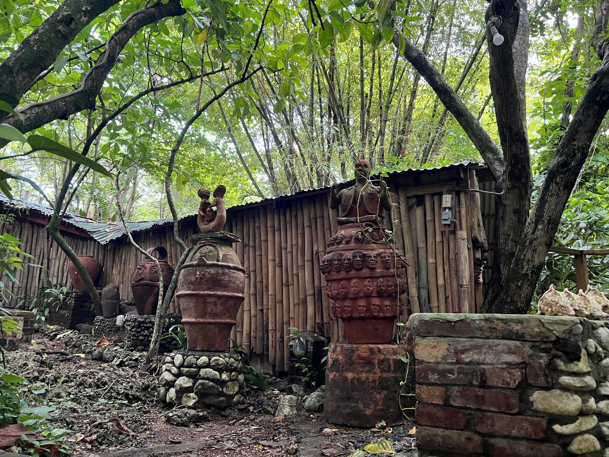

We help you trace family history, uncover ancestral connections, and better understand the people, places, and stories that shaped your lineage.
Begin Your Research
A clean summary of the most important names, places, relationships, and discoveries.
Key ancestral links and context that help make sense of your story.
Guidance on where to go next if you want to continue your reconnection more deeply.